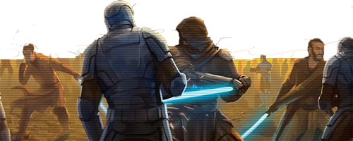
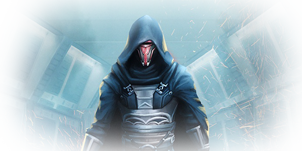

The Rise and fall of a legend.
Revan’s first real sense of “fame” came at a fairly young age, gaining the respect of his early master with his natural gifting in the force as well as his insatiable desire for knowledge. Although the strong urge to learn everything there was to learn about the force could be dangerous it was still admirable. Revan had many masters through out his time as a youngling such as
Later Revan was clamed by Jedi master Mical and started studying force bonds and many other more uncommon force powers along side Alek, his fellow padawan. Together they quickly rose through the ranks to Jedi knight, although Revan was commonly known as the more powerful one of the two and quickly became a well know, charismatic, powerful force user.
The Mandalorian war started as most wars do, the Mandalorians started to invade republic soil and soon enough a war broke out between the republic military and the Mandalorians. At this point in the war the Jedi council refused to aid the republic in their fight. This decision enraged Revan causing him to start to band together his own party of Jedi knights who had the same view to help the republic fight the Mandalorians. The republic media started to refer to Revan and his clan as the Revanchist.
Through the pursuit of the Mandalorians the party od Jedi Knights arrived on a planet called Cathar. Master Lamar and multiple other Jedi Masters followed them to Cathar. The Masters confronted the Revanchist and his group, trying to convince them the Mandalorians were nothing special and demanding that the Revanchist party disband. During the arguing The Revanchist found a Mandalorian mask beneath his feet. When he picked up the mask the entire group of Jedi experience a force vision of the past. In this vison they were showed the brutality of the Mandalorians committing a genocide against the navies of Cathar. Even when one of there own people stepped in to try and stop them, she was belittled and called a traitor. She was then killed along with the rest of the Cathar. This was her mask. The Revanchist took up her mask and wore it himself vowing to never take it off until the Mandalorians were brought to justice
The war continued for some time. Revan with the help of the Jedi order launched an assault on a Sith planet called Malachor V. On Malachor Revan found a Sith training temple, with Revan’s insatiable desire for knowledge he started getting persuaded by the dark side of the force. He spent time studying the knowledge of the dark side from the temple. Revan started to pass this knowledge on to his most trusted friend Malak.
Revan ended up getting caught up by a Mandalorian scouting party on his way to join in the final battle. When he arrived the Mandalorian leader Cassus Fett know as Mandalore. Mandalore realising his defeat was inevitable, he challenged Revan to single combat. Although Mandalore was strong he was overpowered by Revan. While Mandalore was taking his last breaths he removed his mask and began to explain to Revan how he had been manipulated into starting the war by a red skinned Sith. The Sith were using Mandalore to uncover an ancient Sith tomb on ice world of Rekkiad. Revan and Malak went to Rekkiad to investigate the tomb alone. They found a datacron that spoke of a planet named Nathema. The two of them decided to continue following the trail of the Sith to Nathema. On Nathema Revan and Malak discovered the story of the Sith Lord Vitiate, the Sith emperor over a thousand years ago. He convinced his pupils to help him with an old Sith ritual that gave him immortality at the cost of all life on the planet. They continued following the trail to the Sith home planet of Dromund Kaas. They discovered the emperor was planning an attack on the republic. Revan and Malak believed they could stop the emperor themselves, but the second they came into contact with the Sith emperor their minds were dominated and twisted into willing servants. As the two now Sith followed the orders of the emperor, they broke free of his control and their twisted minds started to believe the emperor’s will was their own. They formed their own new empire and started attacking the republic.
The republic dispatched a small fleet of Jedi to infiltrate the Sith Flagship. Revan was confronted by Jedi Knight Bastila Shan and two other Jedi. Malak sensing that Revan was in danger, he decided to take advantage of the situation attempting to overthrow Revan by blowing up the bridge on Revan’s ship. Revan was extremely injured by the blast and only survived because Bastila saved him using her force healing. Bastila’s actions resulted in a very strong force bond being made between them. Bastila took Revan’s broken and comatose body with her to the Jedi order on Dantooien. The Jedi order healed Revan’s body but had to take action against him for the destruction he had caused. The order wiped Revan’s mind and fabricated a new identity for him as a soldier from Deralia. Bastila secretly kept Revan’s Mandalorian mask after the battle as a keepsake. Bastila was ordered by the counsel to try and use her bond with Revan to draw out his memories, in an attempt to find a way to destroy Malak acting as the new lord of the Sith. This task was not as simple as it seemed because Bastila had to keep Revan’s old identity a complete secret from him. Revan joined the republic military and was put on the Endar Spire with Bastila. Their ship was attacked. Revan and his bunk mate Ulgo couldn’t find Bastila and ended up being face to face with Malak’s new apprentice Darth Bandon. Ulgo shouted at Revan to get to the escape pod and charged the Sith. As Revan was heading toward the escape pod, he was contacted by Onasi who was tracking him through the life support system. Together they made it to the escape pod and managed to escape just before the Endar Spire was destroyed. Upon landing Revan and Onasi had one job. Find Bastila. The two of them went through many dangerous situations throughout their quest but made some allies along the way. The group eventually found out Bastila had been captured by a gang of thugs and set out to rescue her. Revan and his crew were successful in their task and saved Bastila. Revan started to get flashbacks of his and Bastila’s fight from when he was a Sith, although he had no idea this was his memories resurfacing. Revan decided to ask Bastila about the strange vision he had. Bastila was skeptical about telling Revan he was force sensitive but had no choice, the two decided to go to Dantooien so Revan could learn more about his gifts. The more time Revan spent with Bastila the more he had these visions and the stronger he became with the force. Revan and his companions would continue to traverse the galaxy following leads to try and find a way to take down Malak. Eventually, Revan and his team found the Star Forge ship and Malak. Malak would go on to reveal Revan’s past to him, but Revan resisted the pull of the dark side and continued to fight for the light. It was an epic battel that ended in Malak’s Defeat and an end to the New Sith Empire. Revan had redeemed himself and was praised once again for his heroism by the republic.
